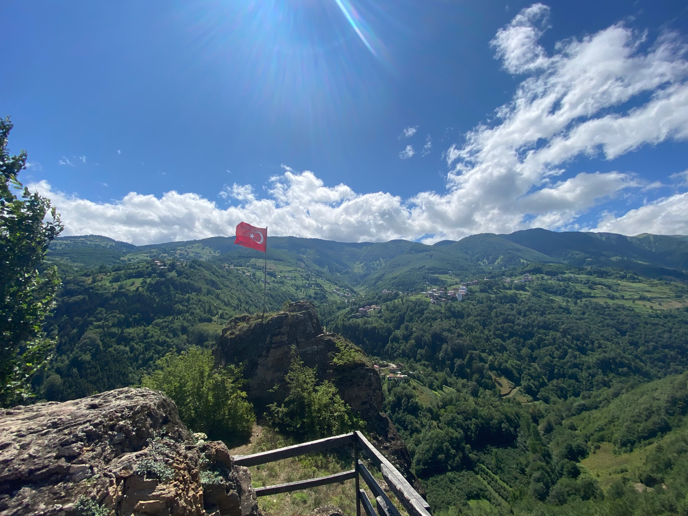
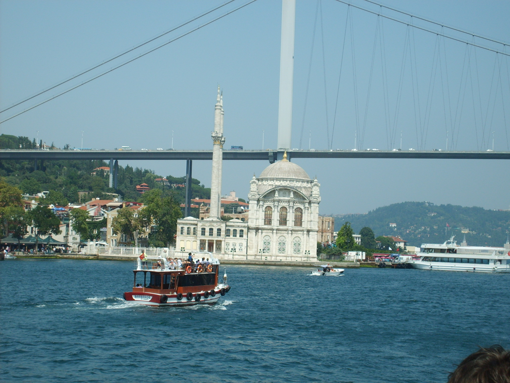
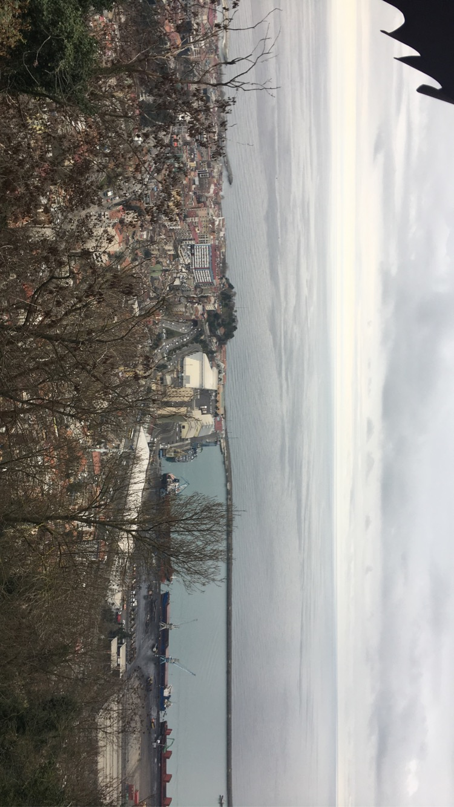
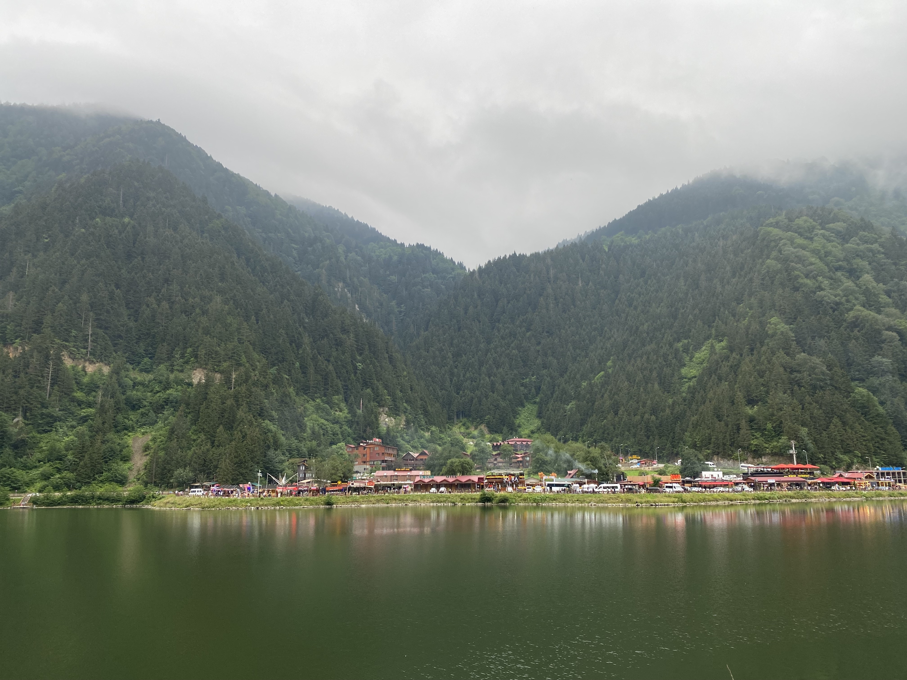

Tremendous Turkish Travels
Turkey is located in between Europe and Asia, being part of each Continent. Its main language is Turkish, and although there are some English speakers, you would have some trouble if you didn't know some Turkish. Turkey is famous for its red tea, ben=ing served in almost any place you visit. Restaurant would even offer tea for free at the end of your meal. It would be considered rude of you to reject that offer. Turkey is also known for their delectable foods, including Kebab, Kofte and many more.
Istanbul, Trabzon, and Uzungol. Three magnificent cities that are each special in their own way. You'll definitely enjoy your time in at least one of them, so how about we go on a quick ride to see which one suits your tastes.

Istanbul

Trabzon

Uzungol